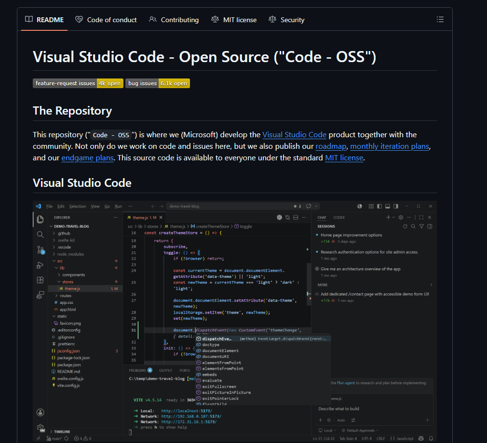

Emergência de Redes Livres de Escala com Agentes Semânticos
Danilo Lindemberg Amorim
PPG Modelagem em Sistemas Complexos
EACH-USP
Pergunta de pesquisa
Agentes semânticos de IA podem reproduzir padrões livres de escala observados em redes complexas sem imposição de um mecanismo formativo?
Redes Complexas Livres de Escala
- O que é. Em redes livres de escala, poucos nós (chamados hubs) concentram a maioria das ligações. A distribuição de grau segue a Lei da Potência.
- Mecanismo. A Anexação Preferencial (Barabási-Albert) é o mecanismo formativo: cada nó novo cria 2 ligações com chance proporcional ao grau atual, o que gera expoente γ = 3.
- Limite macro versus micro. O mecanismo gera o padrão global, mas não modela a decisão individual: não mostra como cada novo nó escolhe a qual nó se conectar.
Distribuição de grau (log-log)
GitHub como Rede Sociotécnica Livre de Escala
O GitHub é a maior plataforma de hospedagem de código-fonte de projetos de código aberto do mundo
- Rede sociotécnica multicamada: interações entre devs e repositórios formam um grafo bipartido de camadas indissociáveis
- Estrelas como proxy de popularidade: Devs mostram apreciação aos repositórios dando "estrelas" para eles
- Livre de escala: Poucos repositórios com muitas estrelas e muitos repositórios com poucas ou nenhuma estrela
Modelagem Baseada em Agentes (ABM)
Modelagem computacional na qual um fenômeno é representado e analisado em termos de seus agentes individuais e das interações entre eles
- Agentes com perfis heterogêneos tomam decisões em nível micro
- Da auto-organização dos agentes emergem fenômenos em nível macro, sem um coordenador central
- Amplamente aplicado na Ciência de Redes para entender a dinâmica "nas redes" e "das redes"
- Limitação: Codificar regras de decisão complexas, subjetivas ou dependentes do contexto pode ser extremamente desafiador
O agravante: README

1a alternativa: Modelagem Baseada em Agentes Generativos (GABM)
Paradigma de simulação computacional que combina a ABM tradicional com Inteligência Artificial Generativa, particularmente Modelos de Linguagem de Grande Escala (LLMs).
O que ela entrega
- Avaliação semântica do texto de entrada.
- Agentes críveis que decidem pelo contexto.
- Senso comum e decisão próxima da humana.
- Memória entre decisões.
- Reflexão e planejamento.
- Deliberação explícita.
- Regras flexíveis, com menos viés do modelador.
O que ela cobra
Cada decisão consome múltiplas inferências do LLM:
- Custo computacional de milhares de decisões por rodada.
- Custo financeiro de inferência paga por token.
- Tempo de rodadas em horas, não minutos.
Proposta: Modelagem Baseada em Agentes Semânticos (SABM)
Combinação da ABM tradicional com modelos de Decisão Sistema 1
LLMs
- Generativo: produz conteúdo como saída
- Retorna: uma sequência de tokens
- Autoregressivo: cada token de saída é uma inferência que depende das anteriores
- Maior latência e custo: devido a múltiplas inferências necessárias
- Probabilístico: amostragem de tokens de saída dificulta reprodutibilidade do experimento
DS1
- Classificador: discrimina entre opções predeterminadas.
- Retorna: score de probabilidade, ou escolha discreta
- Não-autoregressivo: uma única inferência devolve a resposta.
- Baixa latência e menor custo: economia gerada por uma única inferência
- Probabilístico: porém altamente reproduzível por não realizar amostragem de tokens
Proposta: Modelagem Baseada em Agentes Semânticos (SABM)
Combinação da ABM tradicional com modelos de Decisão Sistema 1
GABM
SABM
Mantém
Abre mão
Metodologia
Simulação de formação da rede durante um período de tempo
Similar o crescimento da rede
Métodos Barabasi-Albert Bipartido (baseline) e SABM.
Comparar contra dados empíricos
Verificar o ajuste com medidas estatísticas
Avaliar os resultados
Qual modelo melhor se assemelha aos dados empríricos?
A mecânica da simulação com SABM irá imitar a dinâmica de desenvolvedores usando a busca do GitHub para encontrar repositórios, e decidindo se dão estrela ou não.
Obrigado!
Danilo Lindemberg Amorim